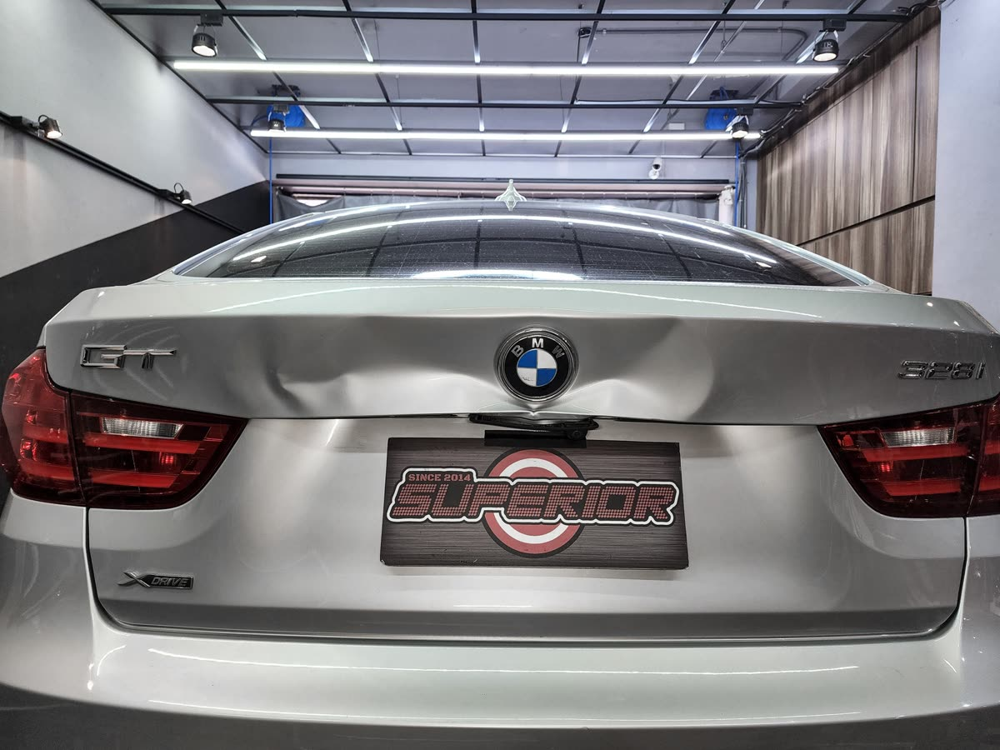
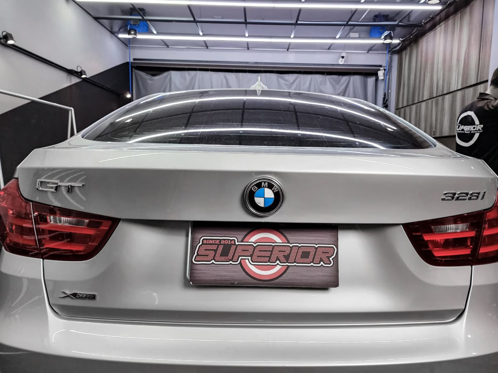

案例實錄
別人不修，
我挑戰
每一個「不可能修復」的案例，都是卓越展現技術深度的舞台。以下兩個案例完整記錄修復過程，從車況分析到最終成果。
大面積扭曲凹痕是 PDR 技術中難度最高、最考驗技師耐性與技術判斷力的項目。卓越深耕這項技藝逾十年，以此建立品牌聲譽、超越客戶期望。
我們始終以最安全的方式施工，在保留原廠漆面的前提下，完整還原每一個受損區域的板件形狀。
大面積凹痕修復的核心在於理解金屬張力（Metal Flow）。撞擊後的金屬沿車身結構強度線流動，形成張力集中區域。錯誤的施力順序會讓殘影無法消除——需先分析金屬流向，才能制定正確的推拉策略。
有經驗的 PDR 技師都明白——台灣車主對修復品質的要求極高。大面積凹痕修復最終的關鍵，不只是把凹陷推回去，而是讓整個板面「修順」，觸感與視覺都渾然天成，才能真正交車。


每一個大面積凹痕案例都是一場精準的金屬再生工程。以下影片記錄卓越技師如何分析、制定策略，並一步步將嚴重扭曲的板金雕刻回原廠線條。
別人不修的高難度凹痕，卓越用 GPR（Glue Pull Repair）技術極限挑戰，不鑽洞、不烤漆完整修復。
新車烤漆碰上凹痕，只能切板金、換板金嗎？卓越用免烤漆凹痕修復，完整保留原廠塗裝。
追蹤 @superiorpdrtaiwan，每一支 Reel 都是真實的大面積凹痕修復現場。點擊即可觀看。
拖動中間的滑桿，親眼見證卓越如何將嚴重扭曲的板金還原至原廠光影——完整保留原廠塗裝，不烤漆、不補土。
深色車 · 前葉子板嚴重撞擊扭曲
白色車 · 後葉子板大面積凹陷
白色車 · 前葉子板輪弧大凹
每一個「不可能修復」的案例，都是卓越展現技術深度的舞台。以下兩個案例完整記錄修復過程，從車況分析到最終成果。
卓越技術長小馬於 MTE 2026 PDR 競賽獲世界第三名，正是大面積、高難度凹痕修復最具公信力的國際認證。
我們的修復流程系統化、透明化，每一個案例都追求超越客戶預期的結果。自 2014 年開業至今，與每位前來的車主建立了長期信任關係。
大面積修復需深入理解金屬在受撞後的應力分布，才能制定正確的施力順序，避免留下殘影。
搭配 Keco K-Tower、Black Plague、CamAuto FLEX TABS 等頂級進口工具，針對不同板件精準施力。
我們以合理價格維持最高標準，修到板面觸感與視覺渾然天成、才算真正完成。
以下整理車主最常詢問的大面積凹痕修復問題，提供完整、正確的資訊。
大面積凹痕費用依凹痕範圍、深度、位置與結構複雜度而定，差異較大，建議透過 LINE 傳送照片取得免費評估報價。一般而言，比傳統板金烤漆換件費用低，且完整保留原廠塗層，車輛殘值不受影響。
很多被判定「需切割換件」的案例，卓越都成功以 PDR 免烤漆修復。Toyota HIACE 大撞後葉板、Mazda 3 後葉嚴重扭曲，都是實際案例。關鍵在於技師是否具備金屬張力分析能力與頂級 GPR 工具。建議帶車到門市讓技師評估，比電話或照片更準確。
GPR（Glue Pull Repair） 是透過特製膠片黏貼於凹陷表面，再以拉塔系統（如 Keco K-Tower）從外部施加橫向或垂直張力，讓金屬自然回彈的技術。適用於從車內部無法進入工具的封閉板件、或需要特殊方向張力的扭曲結構。卓越搭配 Keco、Black Plague、CamAuto FLEX TABS 等頂級系統，可處理傳統推桿無法到達的複雜凹痕。
大面積凹痕修復時間從半天到數天不等，依凹痕複雜程度而定。卓越不以速度換品質——只要能讓板面「修順」達到原廠標準，就是正確的施工時間。預約制服務可確保技師有充足時間完成高品質修復。
不會。PDR 技術完全不動原廠塗裝與車身結構，不涉及切割、焊接或補土噴漆，因此不影響原廠保固。相反地，保留原廠塗裝的車輛在二手市場殘值明顯優於曾重新烤漆的車輛。選擇 PDR 是保護愛車價值的最佳方案。
大面積凹痕無法單憑描述判斷是否可修，透過 LINE 傳送清晰照片，卓越技師即可快速評估可修復度與費用範圍，完全免費、無壓力。